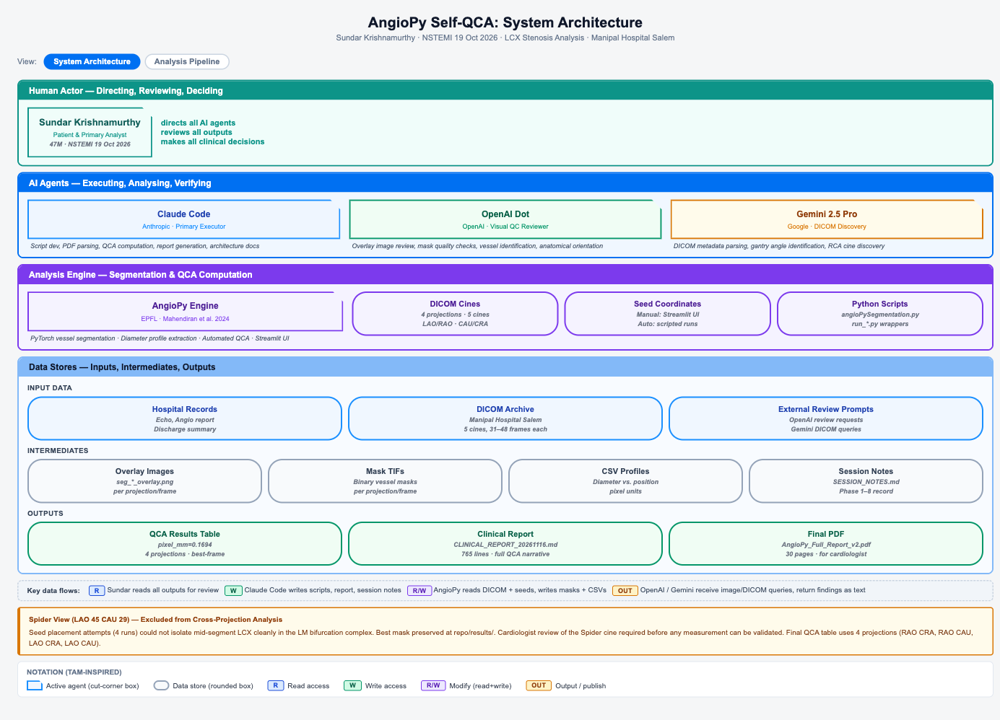
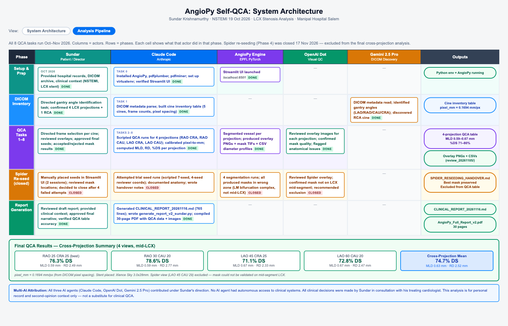

Use the View pills inside the diagram to switch between System Architecture (all agents + data stores)
and Analysis Pipeline (swimlane view of 5 phases across 6 actors).
System Architecture — Static View

Analysis Pipeline — Static View
